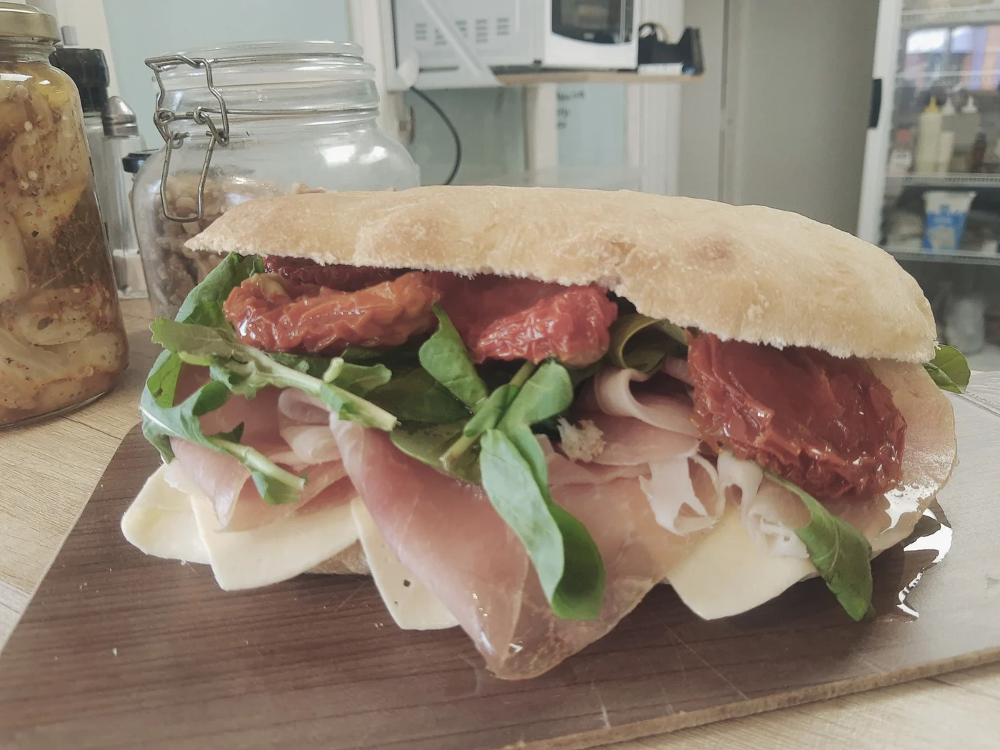
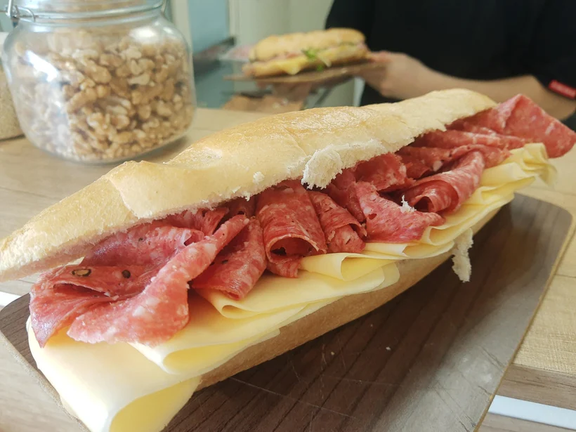
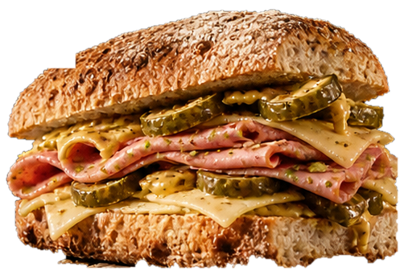
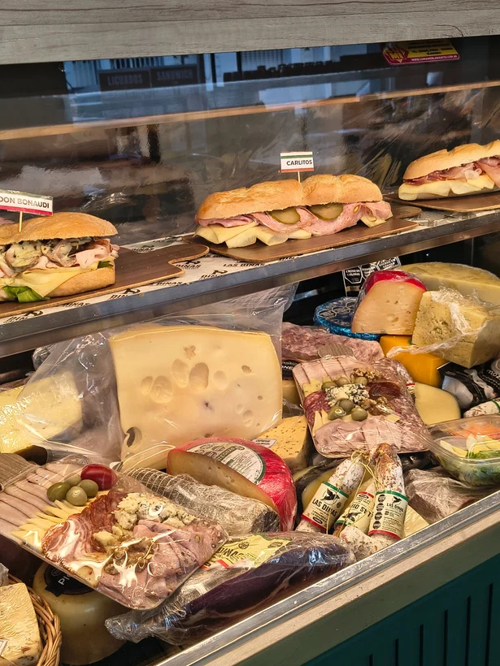
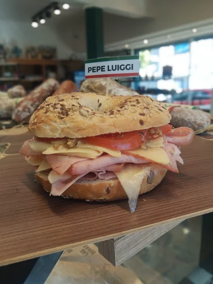
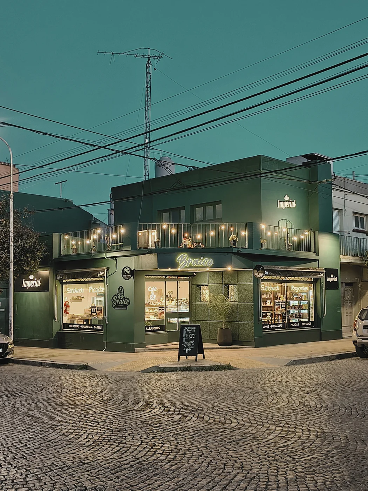

BIENRELLENO.BIEN BRAICO.
Fiambres de acá, combinaciones con carácter y sándwiches con nombre propio.

CON NOMBRE
ESQ. 25 DE MAYO · TANDIL
NO ES UN SÁNDWICH CUALQUIERA / 01
ACÁ SE PIDE
POR NOMBRE.
Osvaldo. Sarita. Carlitos. No son opciones inventadas para la web: son algunos de los 18 sándwiches homenaje de Braico. Abrí una ficha, mirá qué lleva y elegí el tuyo.
OSVALDO
Jamón horneado, queso tybo, pepinillos, manteca y aceite de oliva.
Sin precios publicados como vigentes.
Consulta sin compromiso.

ESQUINA
Los nombres, ingredientes y cantidad de homenajes provienen de la carta de diciembre de 2025. No se atribuyen historias individuales que el negocio no haya confirmado. Fotografías para demo privada.
EL CORTE / UN HOMENAJE POR DENTRO
EL ARTE
DE UN
BUEN
CORTE.
Mortadela con pistachos, queso Tybo, pepinillos, mostaza Dijon y aceite de oliva. Una receta con nombre propio.
*Demostración conceptual fotorrealista con recortes PNG generados. No representa una fotografía oficial ni verifica el armado real de Braico; el pan también es ilustrativo. Productos y nombres según carta de diciembre de 2025.

UN LUGAR CON MEMORIA / 03
ANTES DE BRAICO,
YA HABÍA UNA ESQUINA.
En Chacabuco y 25 de Mayo había un comercio vinculado a la familia Braicovich mucho antes de que existiera Braico. La nueva propuesta recupera ese vínculo con el lugar y lo expresa en su nombre y su carta.
CONOCÉ LA ESQUINA

TANDIL, BUENOS AIRES / 04
NOS VEMOS
EN LA
ESQUINA.
Chacabuco 195, esquina 25 de Mayo. Una parada con sabor propio.
CÓMO LLEGAR HORARIOS: CONFIRMAR EN EL LOCAL O INSTAGRAM